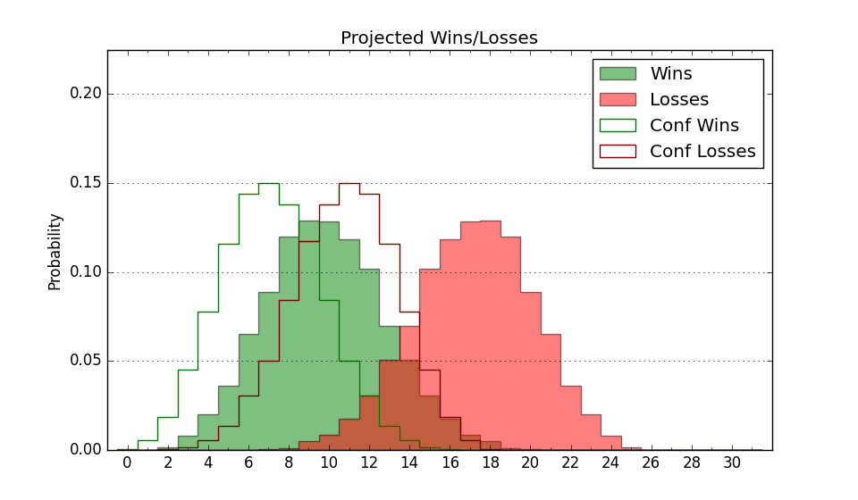

| Home | Game Probabilities | Conferences | Preseason Predictions | Odds Charts | NCAA Tournament |
| City: | Bowling Green, Ohio | |
| Conference: | Mid-American (1st)
| |
| Record: | 0-0 (Conf) 1-4 (Overall) | |
| Ratings: | Comp.: -13.4 (303rd) Net: -13.9 (288th) Off: 98.7 (250th) Def: 112.6 (296th) SoR: 0.0 (267th) |
| Remaining | ||||||
|---|---|---|---|---|---|---|
| Date | Opponent | Win Prob | Pred. | |||
| 11/29 | (N) Weber St. (185) | 25.8% | L 69-76 | |||
| 12/7 | Morgan St. (350) | 77.6% | W 81-72 | |||
| 12/14 | @ UMKC (264) | 27.4% | L 65-71 | |||
| 12/21 | St. Thomas MN (138) | 30.0% | L 67-73 | |||
| 1/4 | Akron (188) | 39.7% | L 71-74 | |||
| 1/7 | @ Western Michigan (305) | 35.4% | L 69-73 | |||
| 1/11 | @ Ball St. (263) | 27.3% | L 68-75 | |||
| 1/14 | Buffalo (340) | 72.2% | W 77-70 | |||
| 1/18 | Eastern Michigan (327) | 69.6% | W 72-66 | |||
| 1/21 | @ Miami OH (236) | 22.5% | L 68-77 | |||
| 1/25 | Toledo (131) | 29.0% | L 75-82 | |||
| 1/28 | @ Kent St. (121) | 9.3% | L 60-76 | |||
| 2/1 | @ Central Michigan (221) | 20.5% | L 63-72 | |||
| 2/4 | Northern Illinois (336) | 71.2% | W 74-68 | |||
| 2/11 | Ohio (126) | 27.5% | L 72-79 | |||
| 2/15 | @ Buffalo (340) | 43.3% | L 73-75 | |||
| 2/18 | Kent St. (121) | 25.8% | L 65-72 | |||
| 2/22 | @ Toledo (131) | 10.7% | L 71-86 | |||
| 2/25 | @ Eastern Michigan (327) | 40.2% | L 68-70 | |||
| 3/1 | Ball St. (263) | 56.2% | W 72-71 | |||
| 3/4 | @ Northern Illinois (336) | 42.1% | L 70-72 | |||
| 3/7 | Western Michigan (305) | 65.1% | W 73-69 | |||
| Previous | Game Score | |||||
| Date | Opponent | Win Prob | Result | Off | Def | Net |
| 11/4 | @Southern Miss (256) | 26.1% | L 68-77 | -7.3 | 8.1 | 0.8 |
| 11/8 | Davidson (125) | 27.2% | L 85-91 | 13.1 | -4.5 | 8.6 |
| 11/16 | @Michigan St. (34) | 2.2% | L 72-86 | 19.7 | -4.5 | 15.2 |
| 11/19 | Niagara (334) | 71.0% | W 76-68 | 8.9 | -1.8 | 7.0 |
| 11/23 | @Bellarmine (300) | 34.0% | L 68-80 | -3.6 | -10.1 | -13.6 |
| Stats & Trends | |||||
|---|---|---|---|---|---|
| Current | Day | Week | Month | Season | |
| Composite | -13.4 | -1.7 | -1.2 | -0.3 | -0.3 |
| Comp Rank | 303 | -14 | +4 | +6 | +6 |
| Net Efficiency | -13.9 | -5.4 | -5.3 | -- | -- |
| Net Rank | 288 | -38 | -44 | -- | -- |
| Off Efficiency | 98.7 | -3.8 | -11.7 | -- | -- |
| Off Rank | 250 | -57 | -150 | -- | -- |
| Def Efficiency | 112.6 | -1.6 | +6.3 | -- | -- |
| Def Rank | 296 | -24 | +33 | -- | -- |
| SoS Rank | 215 | -26 | -113 | -- | -- |
| Exp. Wins | 9.8 | -0.8 | -0.3 | -0.3 | -0.3 |
| Exp. Conf Wins | 7.2 | -0.3 | -0.2 | +0.2 | +0.2 |
| Conf Champ Prob | 0.9 | -0.3 | -0.6 | -0.3 | -0.3 |

| Advanced Stats | ||
|---|---|---|
| Stat | Value | Rank |
| Off Eff FG % | 0.475 | 246 |
| Off Ast Ratio | 0.125 | 259 |
| Off ORB% | 0.198 | 335 |
| Off TO Rate | 0.138 | 111 |
| Off FT Ratio | 0.243 | 332 |
| Def Eff FG % | 0.516 | 214 |
| Def Ast Ratio | 0.153 | 233 |
| Def ORB% | 0.342 | 305 |
| Def TO Rate | 0.141 | 230 |
| Def FT Ratio | 0.438 | 299 |